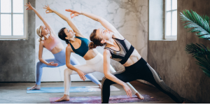

About
- Advanced Yoga Teacher
- Pilates Instructor
- Online and In Person Nutrition Advice
I am passionate about helping clients achieve their goals through exercise and mindset and its my mission to help people improve their function, movement and overall quality of life.
My Background
From a young age I developed an interest in movement through dancing. In my early 20’s I found myself striving to continue improving my fitness and health levels through exercise and nutrition. I found yoga soon after and I continued to practice it throughout my late 20’s. I always came back to yoga when I needed to ground myself or just remind myself who I am. But in my early 30’s I decided to delve in deeper into the practice of Yoga